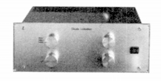

■価格 78,000円■フォノイコライザーアンプ■入力インピーダンス ■出力インピーダンス 600Ω■利得 ■RIAA偏差 ■周波数帯域 ■全高調歪率 ■SN比 ■チャンネルセパレーション ■電源 AC100V 50/60Hz■重量 8.0kg■寸法 W39.0×H14.5×D22.5cm ■発売 1986年■販売終了 1989年頃■備考 価格は1986年頃のもの
新藤ラボラトリーのインデックスへ